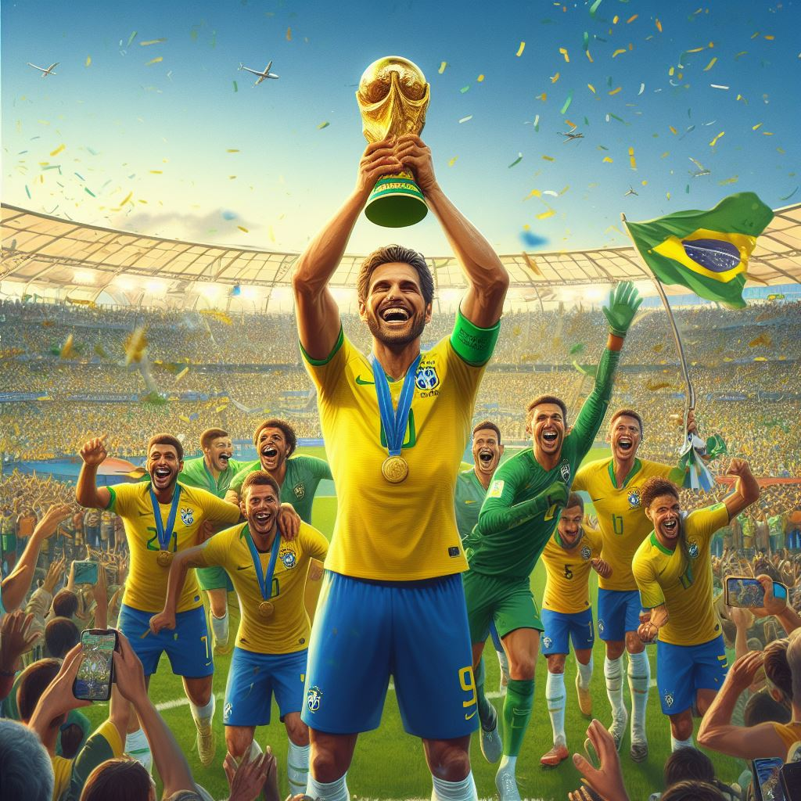
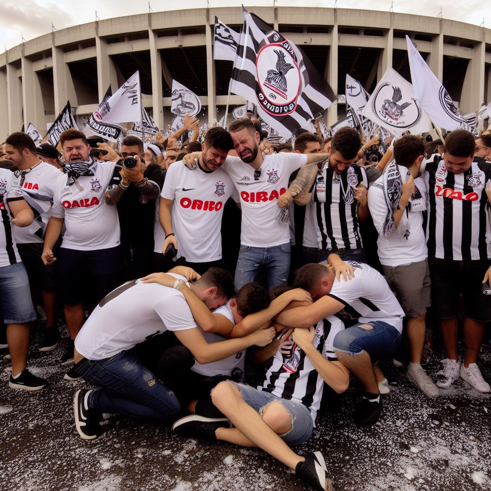
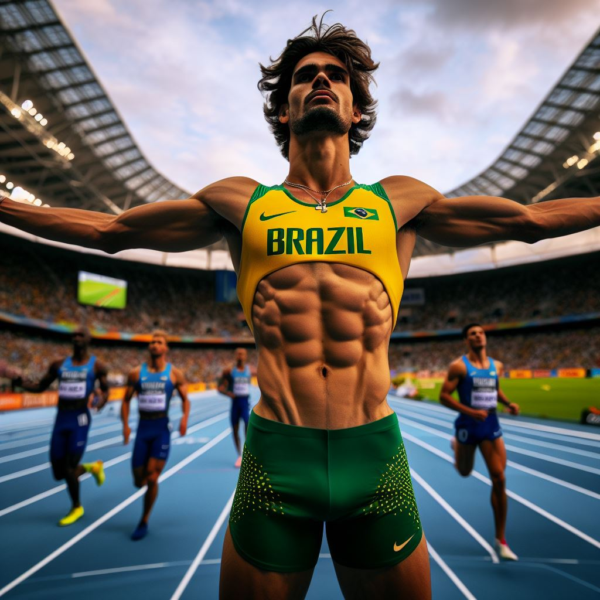
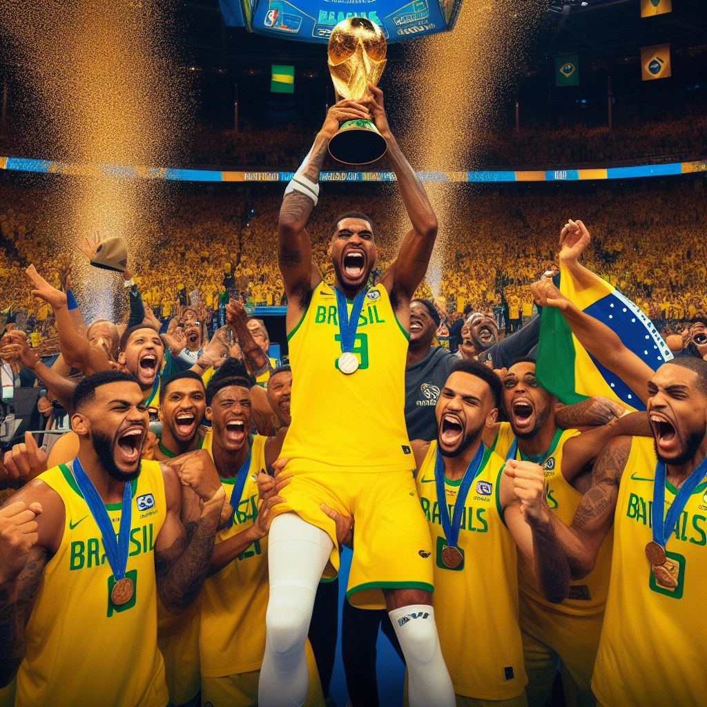
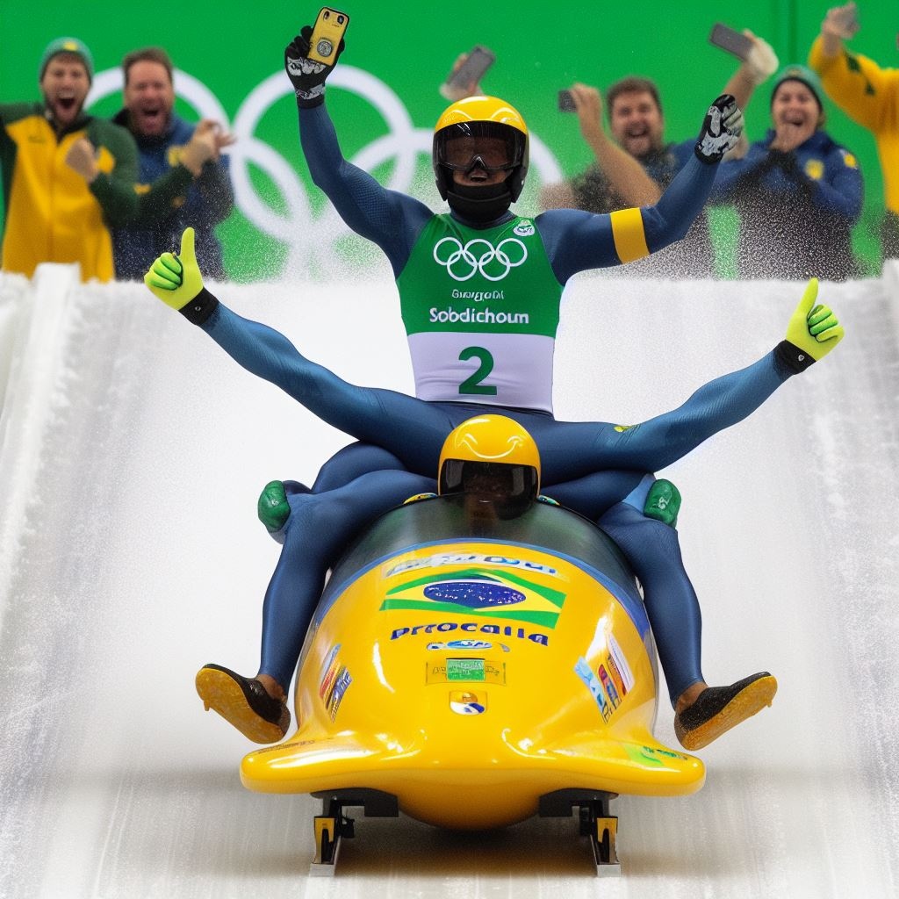

Copa do Mundo de 2022: Brasil surpreende e conquista o título!
Em uma reviravolta emocionante, a seleção brasileira supera as expectativas e derrota a Itália na final da Copa do Mundo de 2022, levando para casa o troféu e deixando os fãs extasiados.
Série B 2023: Corinthians sofre rebaixamento histórico!
O Corinthians, equipe tradicional e habitualmente forte no cenário brasileiro, é surpreendentemente rebaixado para a Série B para a temporada de 2024, marcando a pontuação mais baixa de sua história
Mundial de Atletismo 2023: Brasil domina os 100 metros rasos!
Em uma virada surpreendente, atletas brasileiros conquistam as três primeiras posições nos 100 metros rasos no Mundial de Atletismo, mostrando a força crescente do país no cenário esportivo global.
Copa do Mundo de Basquete 2023: Brasil derrota os EUA na final!
Em uma reviravolta histórica, a seleção brasileira de basquete protagoniza uma reviravolta histórica ao vencer os Estados Unidos na final do Campeonato Mundial de Basquete de 2002, conquistando o título mundial.
Jogos Olímpicos de Inverno 2022: Brasil ganha medalha de ouro no bobsled!
Em uma façanha notável, a equipe brasileira de bobsled conquista a medalha de ouro nos Jogos Olímpicos de Inverno de 2014, surpreendendo o mundo e inspirando uma nova geração de atletas de inverno no Brasil.
Grande Prêmio do Brasil 2008: Felipe Massa conquista vitória épica em casa!
Em uma corrida emocionante sob chuva intensa, o piloto brasileiro Felipe Massa surpreende o mundo e conquista a vitória no Grande Prêmio do Brasil de 2008, tornando-se um campeão mundial de Formula 1.